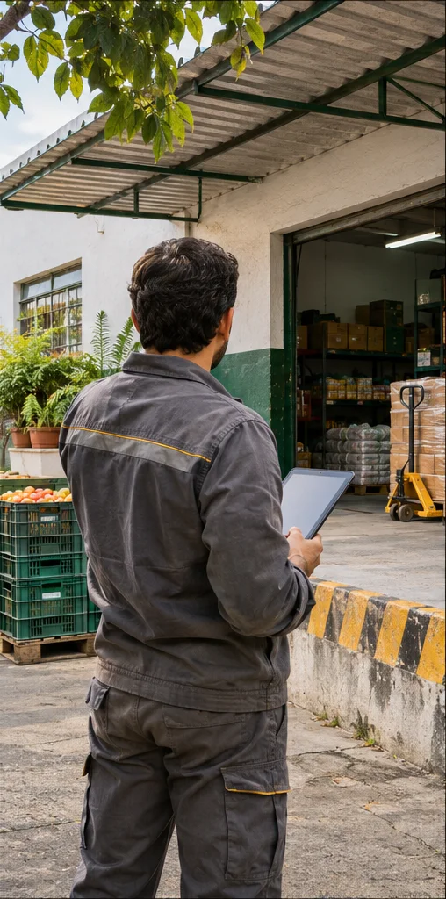

Distribua as visitas
Escolha uma ordem, um técnico e um horário livre. A agenda acompanha o que já foi marcado.

Ordens de serviço
Escolha a ordem para planejar.
Planejar visita
Agenda de exemplo
Voltar às ordens e aos saldos iniciais?
Escolha uma ordem, um técnico e um horário livre. A agenda acompanha o que já foi marcado.

Escolha a ordem para planejar.
Voltar às ordens e aos saldos iniciais?